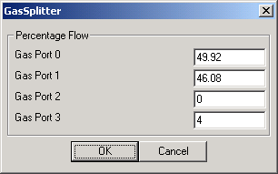

|  | This User Interface allows the user to determine how much of the inlet gas stream to divert to each outlet gas stream. Values represent percentages and should sum to 100. Example (shown): 49.92 means that 49.92% of the inlet gas will flow out through outlet port 0. Therefore, if the inlet gas stream had a flowrate of 100 kg/s, the exiting gas stream flowing through outlet port 0 would have a new flowrate of 49.92 kg/s. |